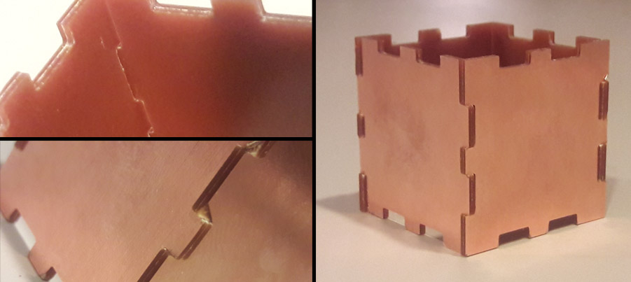
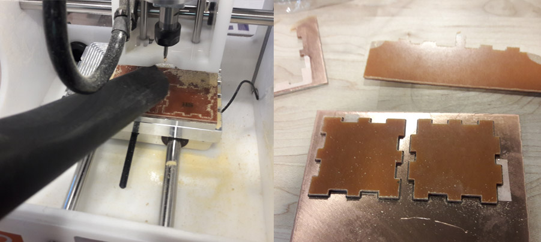
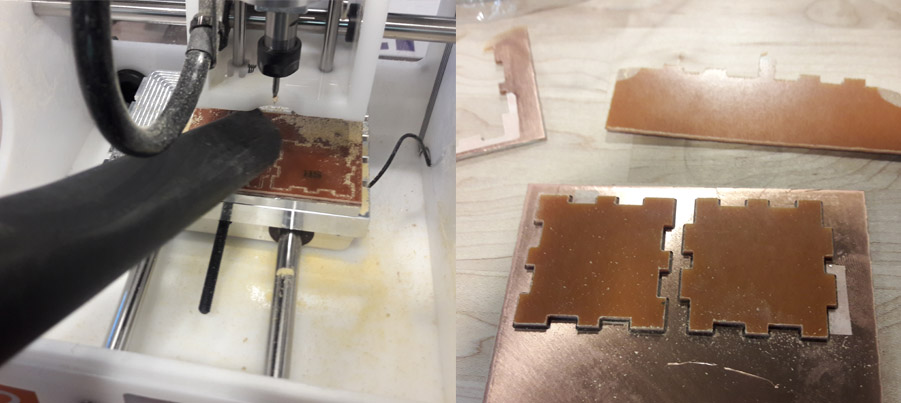

A5: Subtractive Fabrication and CNC milling

Write up of process: Flat design and milling process
- Decided to use finger joint method to make my box
- Drew my box design in Adobe Illustrator
- Exported the design as .DXF file
- Imported the .DXF file into KiCad
- Saved a .GRB file
- Opened the file in Bantam Tools
- Milled the file - success!
- Press fit the box
Problems in project and how I resolved them
- F1 has zero flexibility, file must be perfect
- I very carefully measured to be sure I did not waste F1
- As a result,my first mill had no gaps
Bantam Tools Milling Machine settings
- 1/32" bit was already installed when I arrived
- Rehomed the bit
- Made and F1 sandwich using double stick tape
- Fixed the F1 sandwich to the base plate with double stick tape
- Bantam Tools settings:
- Custom size: X=100mm, Y=70.6mm, Z=1.46mm
- Placement: X=4mm, Y=4mm, Z=1.52mm
- Started the milling machinge from Bantam Tools
- After milling, vacuumed up the particulates
 

Assembly
- The following images show how the pieces successfully fit together with not gaps
Source files
- Illustrator file
- Download source file
- Bantam file
- Download source file
- Gerber file
- Download source file
- DXF file
- Download source file
Peer-attribution
- Special thanks to @Andrew Waer, who was at The Mill when I arrived and gave me great tips on how to use Bantam Tools and the milling machine!